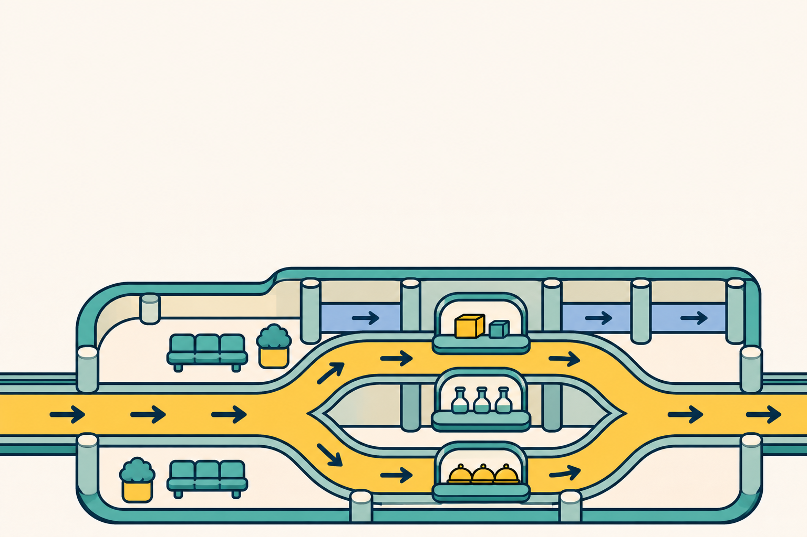
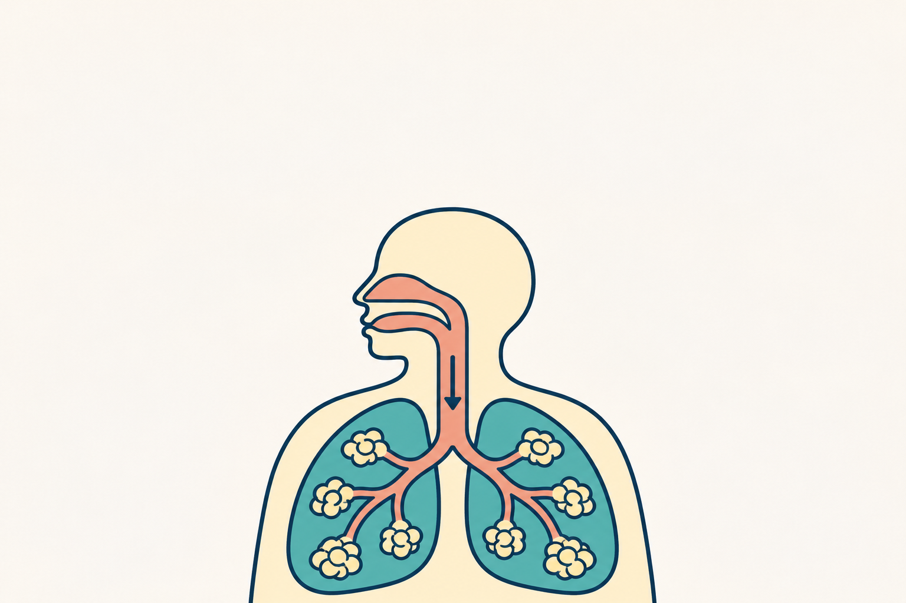
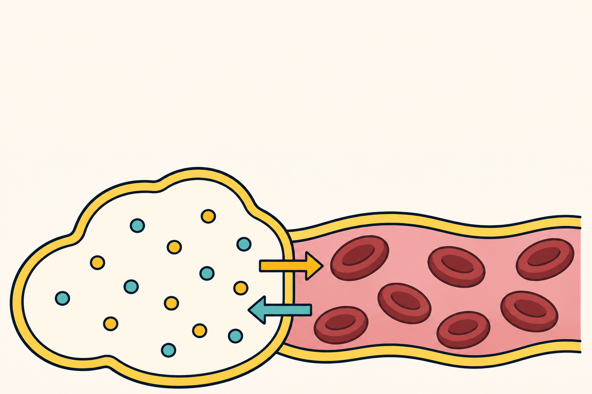
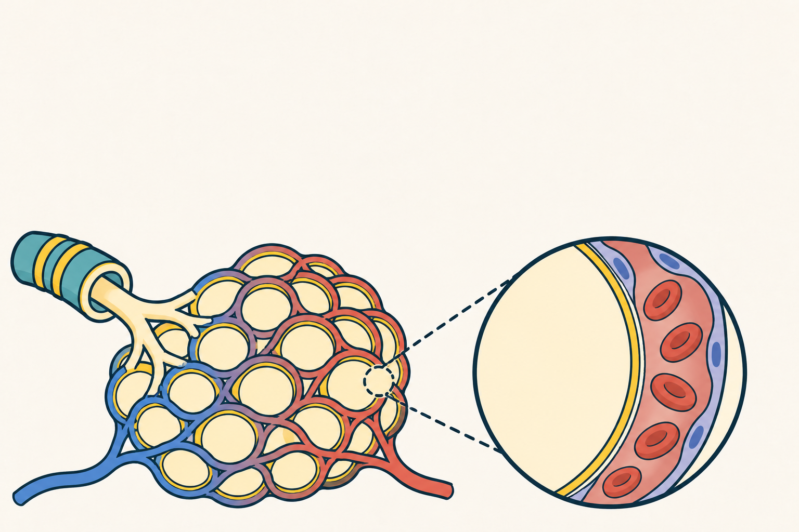

지난 수업 복습
들이마신 공기는 어디까지 가고, 산소는 어디에서 혈액으로 넘어갈까?
-
학생공기가 들어온 길 어디에서나 혈액과 만나나요?
안내자갈라지는 통로와 그 끝의 창구를 나누어 보자.

1컷 역과 창구를 떠올려 봐요. 입구에서 갈림길을 따라가면 다른 쪽과 무언가를 주고받는 곳에 닿아요.
비유 연결 갈림길을 따라 도착하는 여러 창구 → 기도의 작은 갈래 끝에서 공기가 폐포에 도착하는 경로 · 창구의 앞뒤에서 건네는 물건 → 폐포 공기와 모세혈관 사이의 기체 교환
-
안내자기관에서 길이 갈라지고, 가장 가는 가지 끝에서 폐포를 만나요.

2컷 공기가 가는 길은 코나 입 → 인두 → 후두 → 기관 → 기관지 → 세기관지 → 폐포예요.
-
학생창구에 닿은 공기 전체가 혈관으로 들어가나요?
안내자폐포와 혈액은 얇은 경계로 나뉘고, 그 사이를 기체 분자가 확산해요.

3컷 폐포의 공기와 모세혈관 혈액 사이에서는 기체가 얇은 장벽을 지나 단순확산해요.
여기까지의 비유예요 공기 덩어리가 혈관으로 들어가는 것은 아니에요. 장벽을 사이에 두고 기체 분자가 단순확산해요.
-
학생창구가 여러 개라 면적이 넓고, 창구 앞뒤 사이는 가까운 셈이군요.

4컷 많은 폐포는 교환 면적을 넓히고, 얇은 장벽은 확산 거리를 짧게 해요.
코나 입에서 들어온 공기는 인두·후두·기관·기관지·세기관지를 지나 폐포에 닿아요. 기체는 넓고 얇은 폐포 경계에서 모세혈관 혈액과 확산으로 교환돼요.
용어
- 기관과 기관지
- 한 기관에서 좌우 기관지가 갈라지고, 더 가는 세기관지가 폐포까지 이어져요.
- 폐포
- 많은 폐포가 교환 면적을 늘리고, 얇은 장벽이 기체가 지나는 거리를 줄여요.